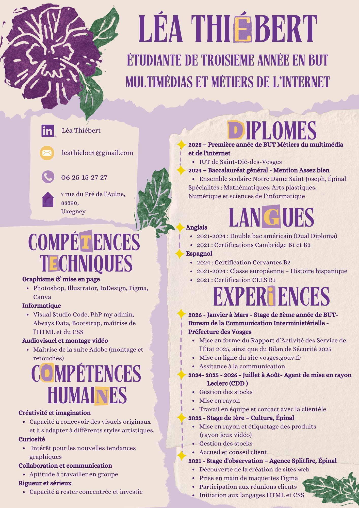

Etudiante 2ème année MMI • Recherche de stage de 3ème année dans le milieu du Graphisme et de la Communication
Bienvenue sur mon site porfolio !
Je suis Léa Thiébert, étudiante en 3ᵉ année de BUT Mulitmédias et Métiers de l'Internet. Passionnée par le design graphique, le web et la création numérique, je cherche un stage rémunéré de mars à juin 2027 (date à confirmer) dans le milieu du Graphisme et de la Communication.
Logiciels & outils
Les logiciels que j'utilise au quotidien pour mes projets de graphisme, web et création audio.
 Figma
Figma
 Photoshop
Photoshop
 Illustrator
Illustrator
 InDesign
InDesign
 Audition
Audition
 Premiere Pro
Premiere Pro
 Canva
Canva
 Blender
Blender
 VS Code
VS Code
 GitHub
GitHub
Mon CV
